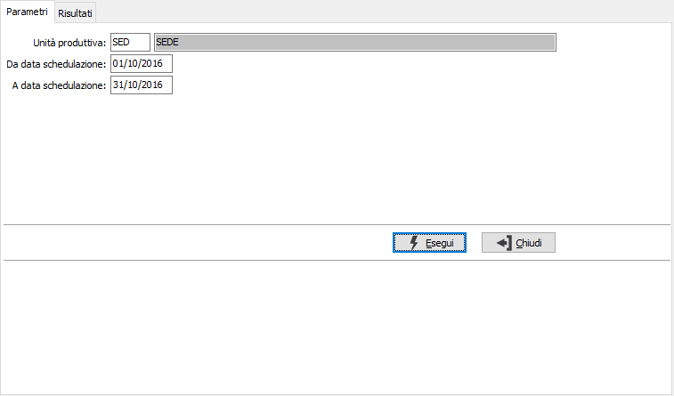
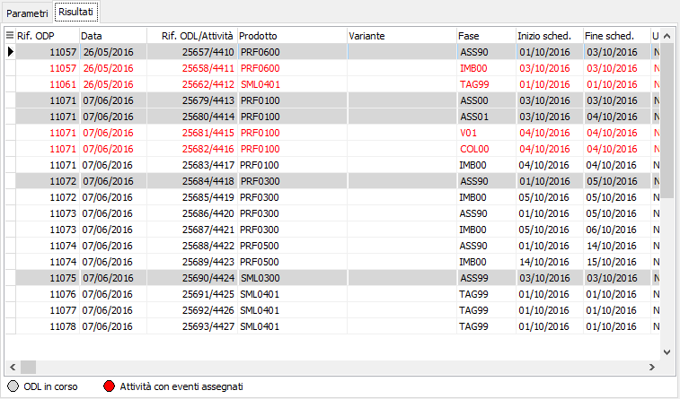

Annullamento schedulazione
La funzione consente di annullare la schedulazione di un gruppo di attività.
Nei parametri viene richiesta l'unità produttiva con proposta l'unità produttiva di default valida per l'utente connesso ad OS1 ed un periodo di date; è possibile solo scegliere l'unità produttiva, se gestite in configurazione le unità produttive multiple.

La pagina dei Risultati riporta, al solo scopo di visualizzazione ed esportazione, le attività che saranno annullate; la pressione sul pulsante Salva della toolbar effettua l'annullamento previa richiesta di conferma.
